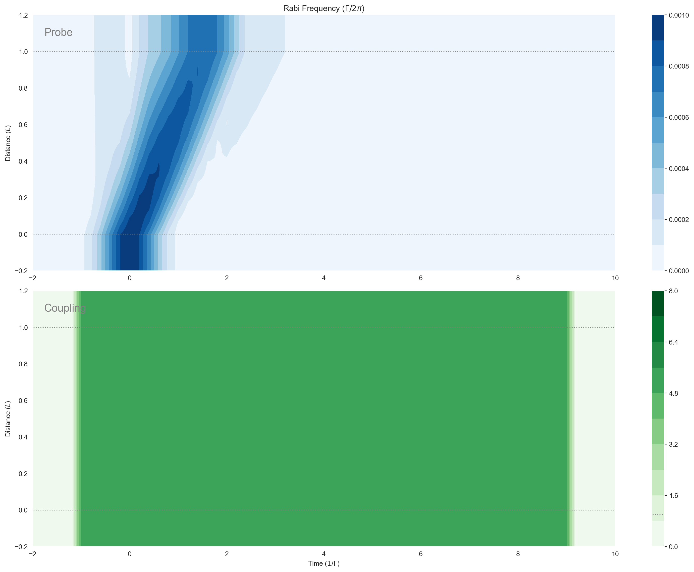

mb_solve_json = """
{
"atom": {
"decays": [
{ "channels": [[0,1]],
"rate": 1.0
},
{ "channels": [[1,2]],
"rate": 1.0e-3
}
],
"fields": [
{
"coupled_levels": [[0, 1]],
"detuning": 5.0,
"detuning_positive": true,
"label": "probe",
"rabi_freq": 1.0e-3,
"rabi_freq_t_args":
{
"ampl": 1.0,
"centre": 0.0,
"fwhm": 1.0
},
"rabi_freq_t_func": "gaussian"
},
{
"coupled_levels": [[1, 2]],
"detuning": 0.0,
"detuning_positive": true,
"label": "coupling",
"rabi_freq": 5.0,
"rabi_freq_t_args":
{
"ampl": 1.0,
"fwhm": 0.2,
"on": -1.0,
"off": 9.0
},
"rabi_freq_t_func": "ramp_onoff"
}
],
"num_states": 3
},
"t_min": -2.0,
"t_max": 10.0,
"t_steps": 60,
"z_min": -0.2,
"z_max": 1.2,
"z_steps": 100,
"z_steps_inner": 2,
"interaction_strengths": [50.0, 50.0],
"savefile": "mbs-ladder-weak-pulse-coupling-decay"
}
"""Ladder-Type Three-Level: Weak Pulse with Coupling — EIT
Define the Problem
from clerq import mb_solve
mb_solve_00 = mb_solve.MBSolve().from_json_str(mb_solve_json)## Solve the Problem
Omegas_zt, states_zt = mb_solve_00.mbsolve(recalc=False)Saving MBSolve to mbs-ladder-weak-pulse-coupling-decay.qu## Plot Output
import matplotlib.pyplot as plt
%matplotlib inline
import seaborn as sns
sns.set_style("dark")
import numpy as np
fig = plt.figure(1, figsize=(16, 12))
# Probe
ax = fig.add_subplot(211)
cmap_range = np.linspace(0.0, 1.0e-3, 11)
cf = ax.contourf(
mb_solve_00.tlist,
mb_solve_00.zlist,
np.abs(mb_solve_00.Omegas_zt[0] / (2 * np.pi)),
cmap_range,
cmap=plt.cm.Blues,
)
ax.set_title(r"Rabi Frequency ($\Gamma / 2\pi $)")
ax.set_ylabel("Distance ($L$)")
ax.text(
0.02,
0.95,
"Probe",
verticalalignment="top",
horizontalalignment="left",
transform=ax.transAxes,
color="grey",
fontsize=16,
)
plt.colorbar(cf)
# Coupling
ax = fig.add_subplot(212)
cmap_range = np.linspace(0.0, 8.0, 11)
cf = ax.contourf(
mb_solve_00.tlist,
mb_solve_00.zlist,
np.abs(mb_solve_00.Omegas_zt[1] / (2 * np.pi)),
cmap_range,
cmap=plt.cm.Greens,
)
ax.set_xlabel(r"Time ($1/\Gamma$)")
ax.set_ylabel("Distance ($L$)")
ax.text(
0.02,
0.95,
"Coupling",
verticalalignment="top",
horizontalalignment="left",
transform=ax.transAxes,
color="grey",
fontsize=16,
)
plt.colorbar(cf)
# Both
for ax in fig.axes:
for y in [0.0, 1.0]:
ax.axhline(y, c="grey", lw=1.0, ls="dotted")
plt.tight_layout();